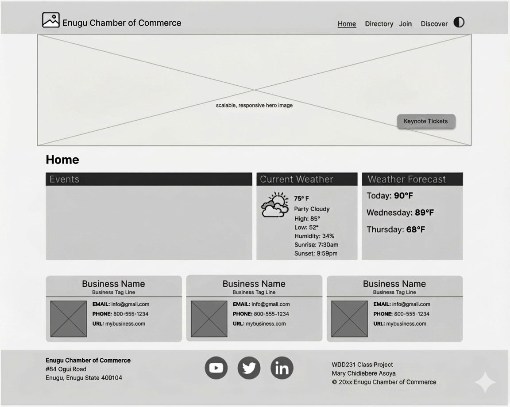
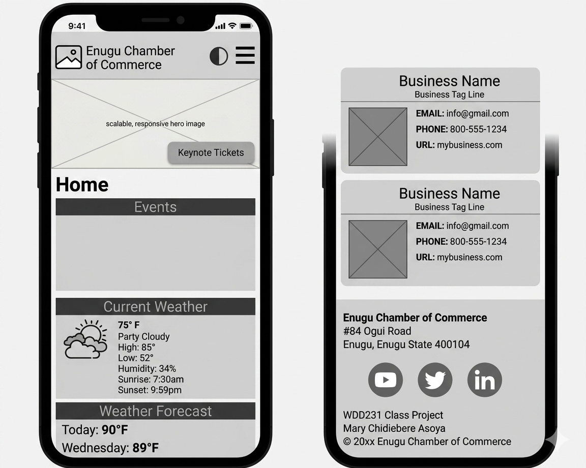

Overview & Project Metadata
Site and application planning is a critical step in successful software development projects. This document provides a blueprint from which to design and develop the project for a chamber of commerce site for a local town or region of your choice.
- Project Timeline: Group work from week 2 through week 5 of the course, adding content and structural functionality progressively.
- Development Model: Each member of the group will develop their own site independently.
- Target Target Page: Wireframes demonstrate the landing page layout to be built in week 3 of this course.
Site Identity
Site Name: Enugu Chamber of Commerce
Site Purpose
This website will serve as a resource hub for businesses in the city. The site will provide information on local events, host networking opportunities, create business directories, and encourage local shopping. It aims to promote local economic growth, support local businesses, and foster a sense of community between the businesses.
Target Market & Goals
Target Market: Business owners and patrons in the city and surrounding areas.
Site Goals
- Improve member engagement by providing valuable resources and networking opportunities.
- Attract new businesses and encourage economic development in the community.
- Improve the visibility and reputation of the chamber as a trusted authority in local business matters.
User Personas
To ensure user-centric development, the site plan defines three core target demographics:
Small Business Owner
Chinedu (35): An entrepreneur who owns a small boutique shop in town. He is looking for networking opportunities, business resources, and marketing support to help grow his business.
Corporate Executive
Chisom (47): An executive at a large company looking for growth opportunities. His company is interested in partnership opportunities, economic development resources, and networking with other business leaders in the area.
The New Resident
Chidiera (28): Recently moved into the community and is looking to learn more about services available in the area. He is interested in finding business directories, event calendars, and community service opportunities.
User Scenarios
- Scenario 1: A local business owner is interested in joining the chamber of commerce to network with other business owners. They visit the website to find information on membership benefits, fees, and how to apply.
- Scenario 2: A community member is looking for upcoming events and workshops hosted by the chamber. They visit the website to browse the events calendar and register for interesting activities.
- Scenario 3: A visitor from out of town is considering relocating to the area and wants to learn more about the local business environment. They explore the chamber's website for information on existing businesses, availability of skilled labor, and quality of life in the area.
Search Engine Optimization (SEO) Plan
- Use relevant keywords in site descriptions, content, and blog posts.
- Verify the site on Google's Business Profile.
- Get inbound links or backlinks from all member businesses to improve rankings.
- Embed Google Analytics in all site pages.
Design Brief (Typography & Color Palette)
You will be selecting your site's specific color scheme and typography parameters to fit your selected city:
Wireframe Architectural Layout
Desktop View

Mobile View
